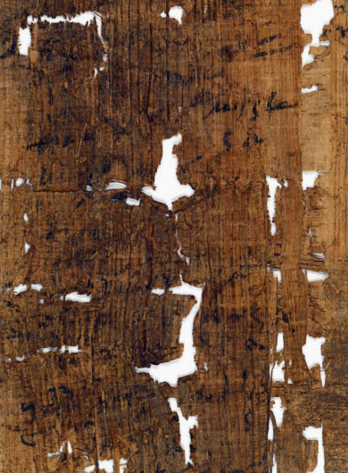

CloserVisible
Fiber and loss
The enlarged detail gives the worn surface more room: crossing fibers, dark marks, and the holes between them.
At close range, fibers and losses fill the view. In the whole photograph, the papyrus's margins and the card stay in relation. The crop gives detail, then takes away its place on the sheet.
The outline uses the published figure's pixel coordinates: x 115–505, y 170–700 in a 714 × 1000 image. The detail is that unchanged crop, shown larger for inspection; display size is not a physical measurement.

The enlarged detail gives the worn surface more room: crossing fibers, dark marks, and the holes between them.
The full photograph locates this passage on the sheet and keeps the dated card and photographic scale nearby. The crop has neither.
Magnification does not choose between the article's “smudging or purposeful erasure,” or say whether the whole surface shares one cause.
A crop makes one passage legible by removing its neighbors.
Here I show the extraction frame beside the detail so that the gain and the loss stay visible together. The frame locates the crop in the photograph; neither view decides what happened to the papyrus before it was photographed.
Fig. 2: Maria Nowak and W. Graham Claytor, “A Local Will with a ‘Codicillary’ Clause,” Pylon 4 (2023). Image courtesy of the University of Michigan Library Digital Collections; CC BY-NC-SA 4.0. Article ↗ · Full text PDF ↗
The full image is retained in its published orientation and without color correction. Crop coordinates refer to the local figure image; the frame is a viewing aid, not a reconstruction of a physical boundary.